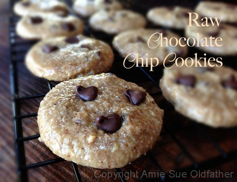
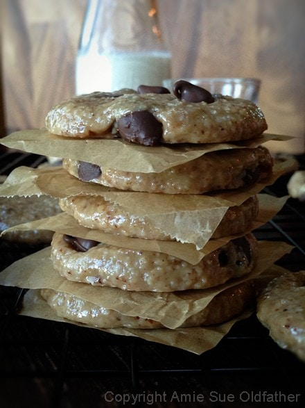
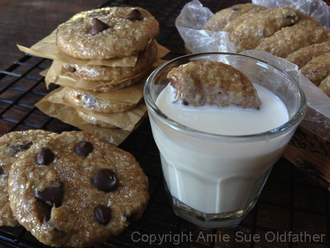
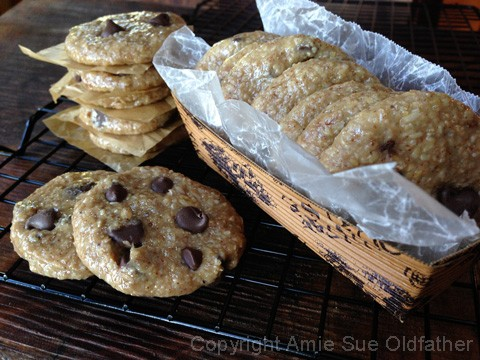
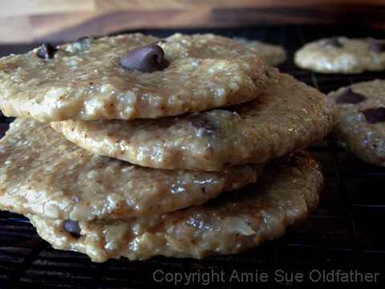

Chocolate Chip Cookies (version 2)

~ raw, gluten-free ~
This cookie just sort of happened the other night. I created a cookie called Almond Hooters and ended up with some leftover dough. So I decided to throw in some chocolate chips.
You can use raw homemade chocolate chips or store-bought ones. If you use raw, you will want to push them into the cookie tops once they come out of the dehydrator otherwise they will melt during the drying process.
If you use store-bought ones, they can be added right into the batter and then dehydrated. They will get soft but will firm up once the cookies cool down. These days, there are many different chocolate chips on the market. Gluten-free, dairy-free, soy-free, organic, fair-trade… you name it. Use whatever you feel comfortable with.
End result… Comments from the peanut gallery raved and claimed that these were the REAL DEAL as far as chocolate chip cookies go! I have to agree and I am a leading child expert in eating raw cookie dough. I can’t even count on both hands the times that my little girlfriends and I would make chocolate chip cookies during sleepovers. Needless to say, the cookies never made it to the oven… the dough went straight into our bellies. Now, I cringe at the thought but I am so thankful that I know have a healthier alternative, and guess what… I can eat it raw! hehe Enjoy with a tall glass of almond milk!
Ingredients:
Yields 35 cookies
- 2 cups gluten-free, rolled oats
- 1 cup oat flour
- 1 tsp Himalayan pink salt
- 1 cup cashew or almond butter
- 1/2 cup maple syrup
- 1/4 cup raw honey
- 1 1/2 tsp vanilla extract
- 1/4 cup raw cold-pressed coconut oil
- chocolate chips, store-bought (raw ones will melt)
Preparation:
- To make your oat flour, place 1 cup of raw oats in the food processor and process until it becomes a fine powder.
- Don’t grind down the other 2 cups. This is all for texture purposes.
- In a food processor, fitted with the “S” blade, add the whole oats, oat flour, and salt. Pulse 2 times to mix in the salt.
- Open the lid and add the nut butter, maple syrup, honey, and vanilla. Process until mixed.
- While the food processor is running, drizzle in the melted coconut oil.
- You may need to stop a few times and scrape the sides and spread the dough around evenly.
- Transfer the batter to a bowl and hand mix in the chocolate chips until well incorporated.
- Using a cookie scoop, scoop out the dough into your hand, roll into a ball and flatten.
- Place the cookie on the mesh dehydrator sheet.
- Dehydrate at 145 (F) degrees for 1 hour, then reduce to 115 (F) degrees and dry for an additional 8 + hours. The cookies will be chewy and flexible.
- Store in an airtight container in the fridge for several weeks or in the freezer for a month.
Culinary Explanations:
- Why do I start the dehydrator at 145 degrees (F)? Click (here) to learn the reason behind this.
- When working with fresh ingredients it is important to taste test as you build a recipe. Learn why (here).
- Don’t own a dehydrator? Learn how to use your oven (here). I do however truly believe that it is a worthwhile investment. Click (here) to learn what I use.


Below, I flattened the cookies to make them really thin. Just another way to enjoy them.

I posted this recipe 01/05/2011 but updated the instructions and photos today. 09/11/2013
© AmieSue.com